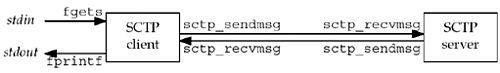

| [ Team LiB ] |
|
10.1 IntroductionWe will now use some of the elementary functions from Chapters 4 and Chapter 9 to write a complete one-to-many SCTP client/server example. Our simple example is similar to the echo server presented in Chapter 5, and performs the following steps:
Figure 10.1 depicts this simple client/server along with the functions used for input and output. Figure 10.1. Simple SCTP streaming echo client and server. We show two arrows between the client and server depicting two unidirectional streams being used, even though the overall association is full-duplex. The fgets and fputs functions are from the standard I/O library. We do not use the writen and readline functions defined in Section 3.9 since they are unnecessary. Instead, we use the sctp_sendmsg and sctp_recvmsg functions defined in Sections 9.9 and Sections 9.10, respectively. For this example, we use a one-to-many-style server. We make this choice for one important reason. The examples in Chapter 5 can be modified to run over SCTP with one minor change: modify the socket function call to specify IPPROTO_SCTP instead of IPPROTO_TCP as the third argument. Simply making this change, however, would not take advantage of any of the additional features provided by SCTP except multihoming. Using the one-to-many style allows us to exercise all of SCTP's features. |
| [ Team LiB ] |
|